<!DOCTYPE html>
<html>
<html lang="en"> 
	<head>
	<!-- 	<meta http-equiv="Content-Security-Policy" content="default-src 'self' data: gap: https://ssl.gstatic.com 'unsafe-eval'; style-src 'self' 'unsafe-inline'; media-src *; img-src 'self' data: content:;"> -->
		<meta name="format-detection" content="telephone=no">
		<meta name="msapplication-tap-highlight" content="no">
		<meta name="viewport" content="user-scalable=no, initial-scale=1, maximum-scale=1, minimum-scale=1, width=device-width">
		<link rel="stylesheet" type="text/css" href="css/index.css">
		<title>Payday</title>
		<!-- Styles -->
		<style type="text/css">
			#loadingDiv {
			  background-color: #4A3657;
			}
			#preloader {
			    position: fixed;
			    top: 0;
			    left: 0;
			    width: 100%;
				height: 100%;
				background-color: #4A3657;
			}
			#loadingImg{
			    position: fixed;
				left: 42%;
			    top: 40%;
			}
			#loader {
			    display: block;
			    position: relative;
				left: 44%;
			    top: 55%;
			    width: 45px;
			    height: 45px;
			    
			    border-radius: 50%;
			    border: 3px solid transparent;
			    border-top-color: #9370DB;
			    -webkit-animation: spin 2s linear infinite;
			    animation: spin 2s linear infinite;
			    z-index: 1001;
			}
			#loader:before {
			    content: "";
			    position: absolute;
			    top: 5px;
			    left: 5px;
			    right: 5px;
			    bottom: 5px;
			    border-radius: 50%;
			    border: 3px solid transparent;
			    border-top-color: #BA55D3;
			    -webkit-animation: spin 3s linear infinite;
			    animation: spin 3s linear infinite;
			}
			#loader:after {
			    content: "";
			    position: absolute;
			    top: 15px;
			    left: 15px;
			    right: 15px;
			    bottom: 15px;
			    border-radius: 50%;
			    border: 3px solid transparent;
			    border-top-color: #FF00FF;
			    -webkit-animation: spin 1.5s linear infinite;
			    animation: spin 1.5s linear infinite;
			}
			@-webkit-keyframes spin {
			    0%   {
			        -webkit-transform: rotate(0deg);
			        -ms-transform: rotate(0deg);
			        transform: rotate(0deg);
			    }
			    100% {
			        -webkit-transform: rotate(360deg);
			        -ms-transform: rotate(360deg);
			        transform: rotate(360deg);
			    }
			}
			@keyframes spin {
			    0%   {
			        -webkit-transform: rotate(0deg);
			        -ms-transform: rotate(0deg);
			        transform: rotate(0deg);
			    }
			    100% {
			        -webkit-transform: rotate(360deg);
			        -ms-transform: rotate(360deg);
			        transform: rotate(360deg);
			    }
			}
		</style>
		<link href="secured/assets/css/w3.css" rel="stylesheet"/>
		<link rel="stylesheet" href="secured/assets/css/materialize.min.css">
		<link href="https://fonts.googleapis.com/icon?family=Material+Icons" rel="stylesheet">
		<link rel="stylesheet" href="https://cdnjs.cloudflare.com/ajax/libs/font-awesome/4.7.0/css/font-awesome.min.css">
		<link href="secured/assets/css/toastr.css" rel="stylesheet"/>
		<link rel="stylesheet" href="secured/assets/css/style.css"/>
	</head>

	<body id="display">
	
	</body>

	<footer>
		<div id="loadingbar" style="z-index: 1000; position: fixed;" class="w3-top loadingbar">
			
			<div id="preloader" >
			  
			  
			  
			  <div id="loader"></div>
			</div>	
		</div>
		
		<!-- scripts -->
		<script src="secured/assets/js/jquery-3.2.1.min.js"></script>		
		<script type="text/javascript">
			$(document).bind("mobileinit", function() {
				$.support.cors = true;
				$.mobile.allowCrossDomainPages = true;
			});
		</script>
		
		<script type="text/javascript" src="cordova.js"></script>
        <script type="text/javascript" src="js/index.js"></script>
		<script src="secured/model/constants.js"></script>
		<script src="secured/model/models.js"></script>
		<script src="secured/route/routes.js"></script>
		<script src="secured/controller/app.js"></script>	
		<script src="secured/assets/js/toastr.js"></script>
		<script src="secured/assets/js/jwt-decode.min.js"></script>
		<script src="secured/assets/ajax/libs/vue.js"></script>
		<script src="secured/assets/ajax/libs/Chart.min.js" />

		<script src="secured/assets/js/moment.js"></script>
		<script type="text/javascript" src="secured/assets/DataTables/datatables.min.js"></script>

	</footer>
</html> 
 